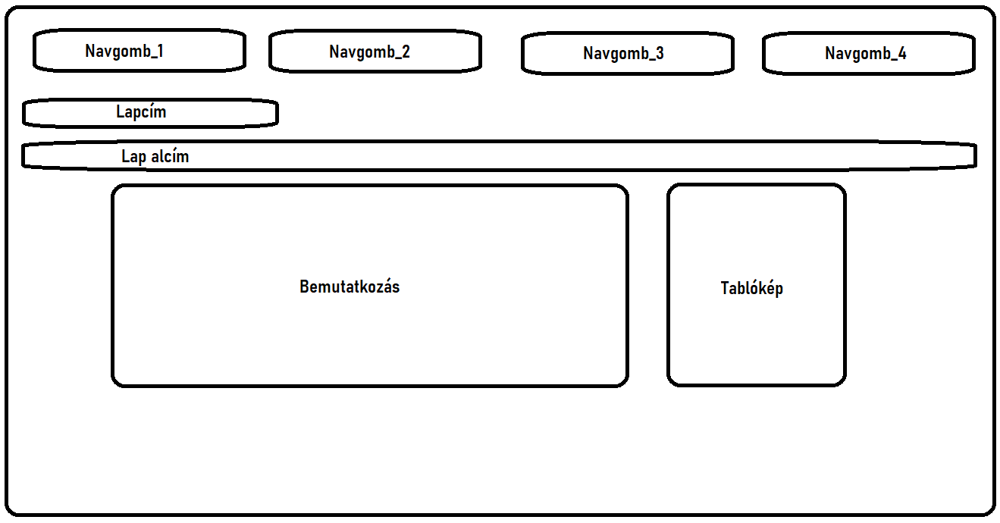
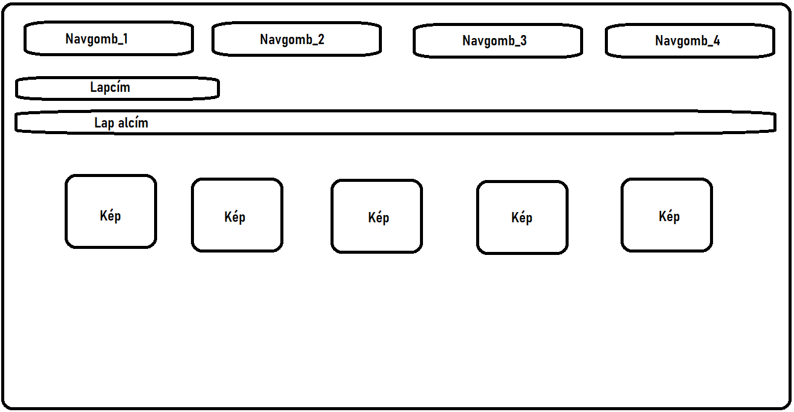
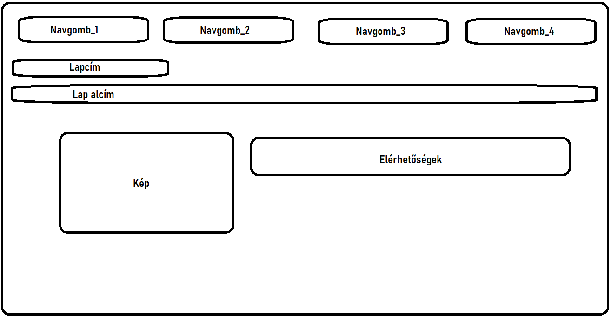
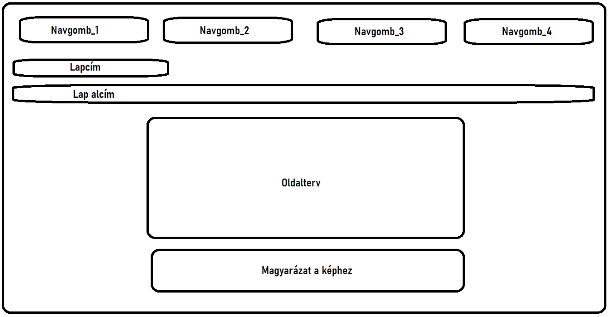

1. Oldal

Az első oldal tetejére egy egyszerű navigációs sávot terveztem.
Mikor megcsináltam a hivatkozások alapját, ez volt a könnyebb rész,
ezután hozzáadtam egy kis animációt ami amennyire gyszerűnek tűnik
annyira nehéz volt kivitelezni. Ehez online kerestem pékdákat.
Ezután ezt egy vázként használva létrehoztam még három oldalt amelyek
a többi weblap alapját képezte.
2. Oldal

A második képek oldalon nem volt olyan nehéz a dolgom a képekkel.
Egy rácsba tettem a képeket, amint ez megvolt, lekerekítettem őket
és azonos méretet adtam nekik, így egységes lett az oldal.
3. Oldal

A Kapcsolatok oldalon nem botlottam különösebb problémába, az előző
oldalakon begyakoroltakkal könnyen elkészítettem.
4. Oldal

A dokumentáció oldal elkészítése soran sem volt probléma. Az oldalak tervét
Paint-ben készítettem el.
Összegzés
A weboldal elkészítése elsőre megijesztett, viszont ahogy elkezdtem csinalni
szép lassan lestisztult előttem a kép. Sokat gondolkoztam a weblap hátterén,
és színvilágán, végül egy letisztult monokróm design mellett döntöttem.
Végsősoron elégedett vagyok a végeredménnyel, még akkor is ha a CSS file om
nem lett a legszebb. Emellett érdekesnek találtam a weblapkészítés
folyamatát.